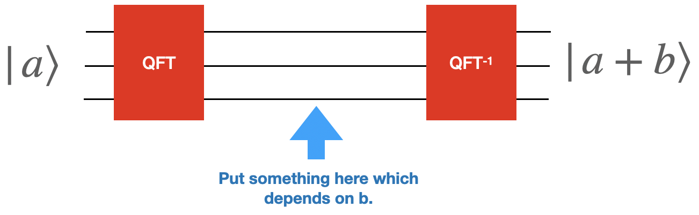

Modular Multiplication#
As part of Shor’s algorithm, we need to perform a controlled version of \(U_{x,N}\), which depends on \(x\) and \(N\), where
There exists efficent (i.e. polynomial time) circuits which implement modular multiplication on a quantum computer. Given such a circuit, it is then straightforward to generate a controlled-version of the gate (simply add a control-wire to each circuit element and decompose back into primitive gates - see the controlled-gate subsection of the univesality page for a more involved discussion of this.)
That said, building this unitary out of H, P, and CNOT is somewhat painful (even arguing it can be done is somewhat painful although see the end of this page).
While it is possible (see the description below), we will accomplish this by adding a native gate to our simulator.
Our approach#
The approach we actually recommend taking is to implement a controlled-classical \(xy \mod N\) gate into your simulator.
They are also reasonably straightforward to implement.
For simulator S: Your simulator essentially works by taking basis elements and responding with the new basis element. Since python does modular multiplication this should be just as easy to add as any of the other gates.
For simulator M-b:
In the previous section you’ve generated \(U_{x,N}\). It should be straigtforward to add this as a gate in a sparse fasion into your simulator. Because it acts on a number of wires you just have to be careful to kron it against the right number of identities in the correct place.
To get the control-\(U_{x,N}\) working is a bit trickier. Essentially you have to figure out what the big unitary matrix for this gate will look like (it will be sparse) and then add it to your simulator.
If possible, we recommend avoiding using this simulator for this and instead using simulator S but it is your choice
In your circuit description you should add
xyModN 4 5 2 15
where the first number is the first wire for the function, the next number is the number of wires for the function (so it works on lines 4,5,6,7,8), and then comes \(x\) and \(N\).
The ctrl-f should work in the following way
CxyModN 3 4 5 2 15
where the first number is the control-bit (like the CNOT), the second number is the first wire for the function, the next number is the number of wires for the function, and then comes \(x\) and \(N\).
Implement these atomic gates into your simulator.
Grading
Verify both the normal and controlled versions of xyModN works by writing (two separate) circuit descriptions that uses them and then checking that it works on those descriptions.
Modular Multiplication#
Extra Credit
20 points extra credit
This section (everything below) is extra credit.
In this section, we are going to discuss how to get (or at least argue you can get) modular multiplication out of primitive gates.
Attempt 1#
We have learned that (see the section in this book on “Classical Gates”) there is a general procedure which compiles a python function which takes \(x\) and gives back \(f(x)\) in time \(O(T)\) and generates a quantum circuit \(U\) such that
which works in time \(O(T \log T)\) (and uses some extra ancilla it returns). This is a super-useful primitive in general but doesn’t work here. Keeping the \(|x\rangle\) around as part of the output is problematic. The fact that it might be avoidable comes from the fact that the target \(U\) is reversible when \(x\) and \(N\) are coprime.
Addition (with a classical b)#
The first step on our quest is to figure out how to do addition. Let’s start off with taking \(|a\rangle\) and adding a fixed classical \(b\) (i.e. our circuit can depend on what \(b\) is).

Grading
Write a python function that takes \(b\) and outputs the circuit which takes \(|a\rangle \rightarrow |a+b\rangle\). The circuit will begin with a quantum fourier transform and ends with an inverse quantum fourier transform. To figure out what to do in the intermediate area, work out the state after the first QFT.
Hint: Think about what you can do with phase gates.
You only need to get the addition working for \(a+b\) which is smaller then \(2^{wires}-1\).

Test your function by running your circuit through your emulator and make sure that you get the correct results.
Grading
Now that you have this working, let’s check two things:
What happens if you add two numbers \(a\) and \(b\) which give a number larger then \(2^{wires}\)?
What happens if you run your circuit backwards?
Answer these two questions and add them your document.
Addition (with two quantum inputs)#
Our next step is to do arithmetic with two quantum inputs. In particular,
This isn’t much harder then what you’ve already done. Now instead of your python programming outputing gates you have to “control” those gates based on the top wires.
Grading
Write python code that takes the number of bits in \(a\) and \(b\) and outputs a circuit which adds \(a\) and \(b\) (again only needing to be correct on values of \(a+b\) which fit in the size of \(b\)

Again, also comment on what happens if you want to add numbers that are too big and if you run your code backwards.
Multiplication by a classical \(b\)#
Suppose we want a unitary matrix that takes \(U_b|a\rangle \rightarrow |ab\rangle\). There’s a simple algorithm which does this in time \(O(b)\); simply add \(a\) to your register \(b\) times. We would prefer to have an algorithm that works in time \(O(\log(b))\).
To accomplish this, we will use the fact that we can write \(b=\sum_ i 2^i b_i\) and that multiplying by \(2^{i}\) is reasonably straightforward.
Use the following general approach:
Copy \(a\) once for each \(i\) (i.e. \(\log(b)\) times).
Multiply the i’th copy of \(a\) by \(2^{i}\). Notice that this largely involves swapping around wires.
Add up all the copies.
Copy the answer to a new register.
Figure out how to uncompute everything you’ve done so far by running essentially all of it backwards (this is essential to returning all the wires in a zero state so we can use them again).
Grading
Write a python code which takes a number b and produces a quantum circuit which generates \(U_b|a\rangle \rightarrow |ab\rangle\)
Multiplication by a quantum \(b\)#
Grading
Now you want to modify this code to take as input \(|b\rangle\) and \(|a\rangle\) and output \(|ba\rangle\). Essentially you are going to do the same thing as previously but now you want to control over the right wires of \(b\).
Warning
This section below here is not yet finished/polished.
Putting the modular back in addition.#
At the end of the day, we were attempting to get \(|xy \mod N\rangle\) but have so far avoiding dealing with the mod \(N\) component. You need to know figure out how to put the modular part of the modular arithmetic back in.
Grading
Figure this out and demonstrate you can do generic modular multiplication.
In Practice#
We have shown in principle that one could do this. In practice, often for specific values of \(N\) and specific system sizes one can do better. For example, check out https://arxiv.org/abs/1202.6614.